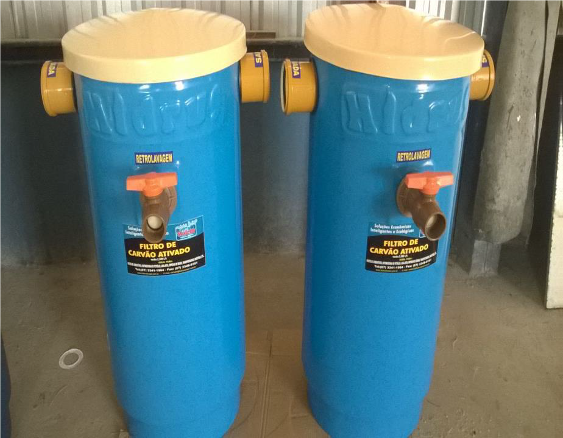
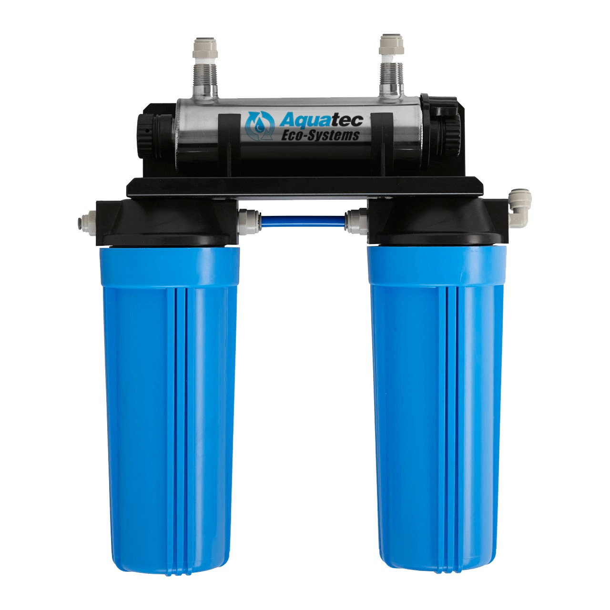

O QUE É A FILTRAGEM?
A filtragem em um sistema de Estação de Tratamento de Efluentes (ETE) desempenha um papel crucial na remoção de impurezas e partículas indesejadas presentes nos efluentes antes de sua liberação no meio ambiente. Essa etapa é essencial para garantir que a água tratada atenda aos padrões ambientais e regulatórios.
FILTRAÇÃO NA ETE
A filtração desempenha um papel crucial em sistemas de Estação de Tratamento de Efluentes (ETE). Em conjunto, os métodos de filtração contribuem significativamente
para garantir a qualidade da água tratada, protegendo o meio ambiente e cumprindo padrões regulatórios rigorosos.

FILTRO DE CARVÃO
Para remoção dos possíveis íons metálicos de cromo, arsênio, estanho, selênio e antimônio presentes na água residual pode ser utilizado processo de adsorção por meio de um filtro de carvão ativado.

FILTRO DE RESINA
Para remoção dos possíveis íons metálicos de chumbo, cádmio, mercúrio, cobre e
zinco, para a realização da desmineralização da água residual, com a remoção de
íons de cálcio, magnésio, sódio e potássio, e a remoção seletiva de íons de nitratos,
sulfatos, fosfatos, amônia, entre outros, pode ser utilizado filtros de resinas de troca
iônica.

IMPORTÂNCIA DOS FILTROS
O filtro de carvão ativado e os filtros de resinas de troca iônica também ajudam na remoção de dióxido de chumbo, óxido de cobalto,
óxido de níquel e óxido de manganês que podem estar presentes na água.